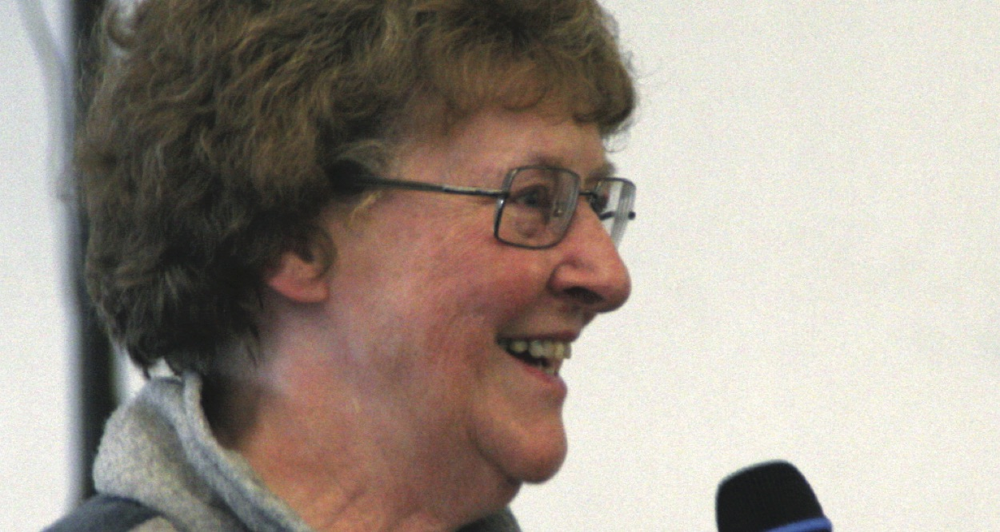
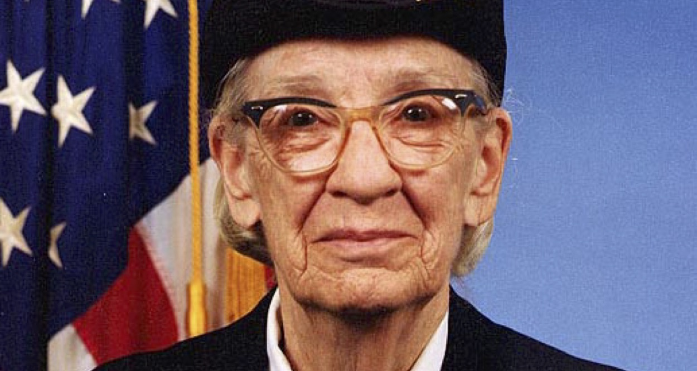
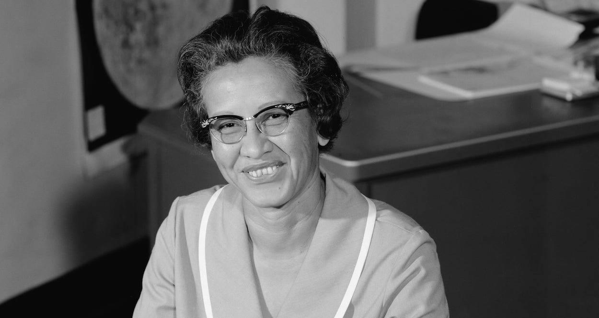
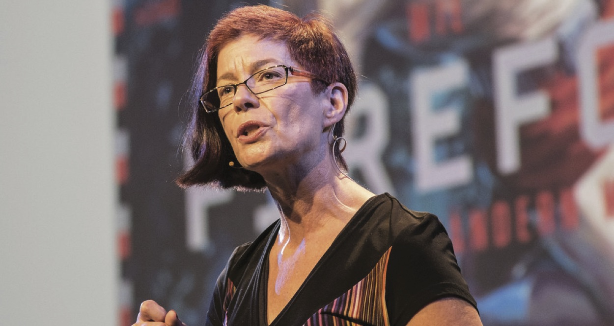

Anita Borg
September 13, 1968
Anita Borg was a computer scientist and a staunch advocate for the advancement of women programmers. Borg, who herself discovered programming in her 20s and graduated from New York University with a PhD in computer science, has probably done more than anyone else to advance the cause of women

Elizabeth Feinler
March 5, 1998
Elizabeth “Jake” Feinler, who birthed the internet URL system we take for granted today. In 2012, Wired’s Cade Metz wrote an excellent profile on Feinler, who, for nearly two decades, ran the Network Information Center (InterNIC), the organization originally responsible for overseeing the use of internet addresses and for publishing internet directories.

Grace Hopper
December 5, 1956
Grace Hopper is one of the most notable, accomplished, and acclaimed computer scientists ever to have lived. Prior to her death in 1992,
Hedy Lamarr
September 3, 1967
Hedy Lamarr is best known as a Hollywood superstar, so you might be wondering why she’s on our list of women programmers, but off-screen, Lamarr was known for her dedication to her other passions: science and inventing. In fact, she created the communication system that would later become the basis for WiFi, GPS, and Bluetooth.

Katherine Johnson
October 13, 1967
A model student, Katherine Johnson skipped enough grades to begin high school at age 13, continuing her education until she earned a Ph.D. in mathematics.

Mitchell Baker
July 31, 1983
Mitchell Baker is a co-founder of the Mozilla Project and acting chairwoman of the Mozilla Foundation. Developer